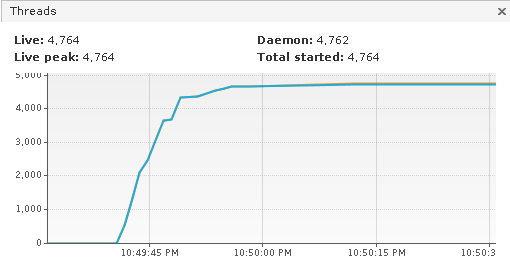
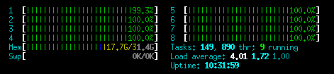

by
Johannes Schüth
Lead Developer of Gentics Mesh
Started in 11/2014
First public release 04/2016
Open source since 07/2016
back-end only CMS
Contents can be accessed via RESTful API
binary storage
searchable contents
image resizing
manage contents in tree structures
versioning
link handling
Lightweight and modern web framework
Embeddable Graph Database
Contents must be searchable
Eclipse Vert.x
OrientDB Graph Database
Elasticsearch
Dagger2
RxJava2
GraphQL
Hazelcast
Swiss army knife for HTTP
Reactive Framework
ASync API
public static void main(String[] args) {
Vertx vertx = Vertx.vertx();
Router router = Router.router(vertx);
router.route("/hello").handler(rc -> {
rc.response().end("World");
});
vertx.createHttpServer()
.requestHandler(router::accept)
.listen(8080);
}Deployable from/via:
Maven
Fully qualified class name
Jar
Instances
public static void main(String[] args) {
Vertx vertx = Vertx.vertx();
vertx.deployVerticle(new TestVerticle());
}class TestVerticle extends AbstractVerticle {
private static final Logger log = LoggerFactory.getLogger(TestVerticle.class);
@Override
public void start(Future<Void> startFuture) throws Exception {
log.info("Started");
startFuture.complete();
}
@Override
public void stop(Future<Void> stopFuture) throws Exception {
log.info("Stopped");
stopFuture.complete();
}
}Blocking the eventloop
Blocking the worker pool
Forgetting about open file handles
Vertx-web sharing routers between verticles
Using verticles to structure endpoints
Websocket disconnects
Sharing the Vert.x webclient between verticles
Blocking in the executeBlocking result handler
for (int i = 0; i < 10000; i++) {
Vertx.vertx();
}
final String ADDR = "dummy";
Vertx vertx = Vertx.vertx();
EventBus bus = vertx.eventBus();
bus.consumer(ADDR, rh -> {
bus.publish(ADDR, "hello-world");
bus.publish(ADDR, "hello-world");
});
bus.publish(ADDR, "hello-world");
Reactive Extensions for the JVM
MeshRestClient client = MeshRestClient.create("localhost", Vertx.vertx());
List<String> names = Arrays.asList("Iron Man",
"Captain America", "Star Lord",
"Black Widow", "Hulk");
client.findProjectByName("MCU").toSingle().flatMapCompletable(project -> {
return Observable.fromIterable(names).flatMapSingle(name -> {
NodeCreateRequest request = new NodeCreateRequest();
request.setParentNodeUuid(project.getRootNode().getUuid());
request.setLanguage("en");
return client.createNode("MCU", request).toSingle();
}).ignoreElements();
}).subscribe();Direct integration with Vert.x via
<dependency>
<groupId>io.vertx</groupId>
<artifactId>vertx-rx-java2</artifactId>
<version>3.5.1</version>
</dependency>import io.vertx.reactivex.core.Vertx;
…
Vertx vertx = Vertx.vertx();Solves two major problems
Overfetching
Underfetching
Loading deeply nested data structures
{
node(path: "/aircrafts/space-shuttle") {
uuid
fields {
... on vehicle {
weight
price
slug
description
}
}
}
}{
"data": {
"node": {
"uuid": "f915b16fa68f40e395b16fa68f10e32d",
"fields": {
"weight": 22700,
"price": 192000000000,
"slug": "space-shuttle",
"description": "The Space Shuttle was a partially reusable low Earth orbital spacecraft system operated by the U.S. National Aeronautics and Space Administration (NASA)."
}
}
}
}demo.getmesh.io/api/v1/demo/graphql/browser
Caching responses is not that easy
Error handling done via JSON
The response of the server is lacking information you need
→ Execute additional requests to load the data
→ Causes additional delays
The response of the server contains more information then you need
→ The data superfluous data still needs to be loaded
→ Causes additional delays and load on the system
Java API to create GraphQL schema
<dependency>
<groupId>com.graphql-java</groupId>
<artifactId>graphql-java</artifactId>
<version>8.0</version>
</dependency>public class RootElement {
private final Demo demo;
public RootElement(Demo demo) {
this.demo = demo;
}
public Demo getDemo() {
return demo;
}
}public class Demo {
private final String name;
private final String id;
public Demo(String id, String name) {
this.id = id;
this.name = name;
}
public String getName() {
return name;
}
public String getId() {
return id;
}
}package com.gentics.graphql;
import static graphql.Scalars.GraphQLString;
import static graphql.schema.GraphQLFieldDefinition.newFieldDefinition;
import static graphql.schema.GraphQLObjectType.newObject;
import com.gentics.graphql.domain.RootElement;
import graphql.schema.GraphQLNonNull;
import graphql.schema.GraphQLObjectType;
import graphql.schema.GraphQLSchema;
public class DemoSchema {
private static GraphQLObjectType createQueryType() {
return newObject().name("QueryType")
// .demo
.field(newFieldDefinition().name("demo")
.type(createDemoType())
.dataFetcher((env) -> {
RootElement root = env.getSource();
return root.getDemo();
}))
.build();
}
private static GraphQLObjectType createDemoType() {
return newObject().name("Demo")
.description("A demo element")
// .id
.field(newFieldDefinition().name("id")
.description("The id of the character.")
.type(new GraphQLNonNull(GraphQLString)))
// .name
.field(newFieldDefinition().name("name")
.description("The name of the element.")
.type(GraphQLString))
.build();
}
public static GraphQLSchema createSchema() {
return GraphQLSchema.newSchema()
.query(createQueryType())
.build();
}
} // .demo
.field(newFieldDefinition().name("demo")
.type(createDemoType())
.dataFetcher((env) -> {
RootElement root = env.getSource();
return root.getDemo();
}))
.build();
}
private static GraphQLObjectType createDemoType() {
return newObject().name("Demo")
.description("A demo element")
// .id
.field(newFieldDefinition().name("id")
.description("The id of the character.")
.type(new GraphQLNonNull(GraphQLString)))
// .name
.field(newFieldDefinition().name("name")
.description("The name of the element.")
.type(GraphQLString))Java based
Highly scaleable
Store mesh elements in indices (Users, Nodes, Groups)
Dynamic mapping can cause issues when input data is dynamic
Index types are gradually being deprecated
Differential sync per index * Assign hashsum to each document * Collect hashsums of all elements in the graph * Collect hashsums of all elements in the index
Compare using Google Guava:
com.google.common.collect.Maps#difference
Map<String, String> sourceVersions = loadVersionsFromGraph();
Map<String, String> sinkVersions = loadVersionsFromIndex(indexName);
MapDifference<String, String> diff = Maps.difference(sourceVersions, sinkVersions);
Set<String> needInsertionInES = diff.entriesOnlyOnLeft().keySet();
Set<String> needRemovalInES = diff.entriesOnlyOnRight().keySet();
Set<String> needUpdate = diff.entriesDiffering().keySet();Embeddable
Direct vendor support for Tinkerpop API
Open Source
Vendor Agnostic API
Supported by many graph database vendors
Gremlin Traversal Language
Way to traverse a graph
// What are the names of Gremlin's friends' friends?
g.V().has("name","gremlin").
out("knows").out("knows").values("name")Object Graph Mapper library (OGM)
Provides Java API to model your Graph Domain using classes
public class User extends AbstractVertexFrame {
public String getName() {
return getProperty("name");
}
public List<? extends User> getFriends() {
return in(KNOWS).has(User.class).toListExplicit(User.class);
}
}Java based Graph Database
First release in 2010
Directly supports Tinkerpop API
Running DB embedded is uncommon
Transaction handling is still very vendor specific
Dagger is a fully static, compile-time dependency injection framework for both Java.
Now maintained by Google
Switched from Spring DI to Dagger 2
Reduced startup time since no complex component-scanning is involved
@Singleton
@Component(modules = { AppModule.class })
public interface AppComponent {
JsonObject configuration();
HelloService hello();
@Component.Builder
interface Builder {
@BindsInstance
Builder configuration(JsonObject configuration);
AppComponent build();
}
}@Singleton
public class HelloService {
@Inject
JsonObject configuration;
@Inject
public HelloService() {
}
public String getResult() {
return configuration.getString("hello");
}
}JsonObject config = new JsonObject();
config.put("hello", "world");
AppComponent app = DaggerAppComponent.builder()
.configuration(config)
.build();
System.out.println(app.hello().getResult());<dependencies>
<dependency>
<groupId>com.google.dagger</groupId>
<artifactId>dagger-compiler</artifactId>
<version>${dagger.version}</version>
</dependency>
</dependencies>
<build>
<plugins>
<plugin>
<groupId>org.apache.maven.plugins</groupId>
<artifactId>maven-compiler-plugin</artifactId>
<version>3.7.0</version>
<configuration>
<verbose>true</verbose>
<source>8</source>
<target>8</target>
<forceJavacCompilerUse>true</forceJavacCompilerUse>
</configuration>
<dependencies>
<dependency>
<groupId>com.google.dagger</groupId>
<artifactId>dagger-compiler</artifactId>
<version>${dagger.version}</version>
<optional>true</optional>
</dependency>
</dependencies>
</plugin>
</plugins>
</build>IDE integration can be tricky
Dagger code often needs to be fully regenerated